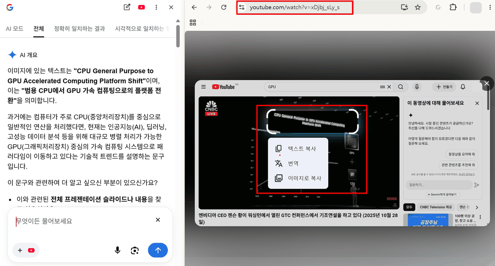
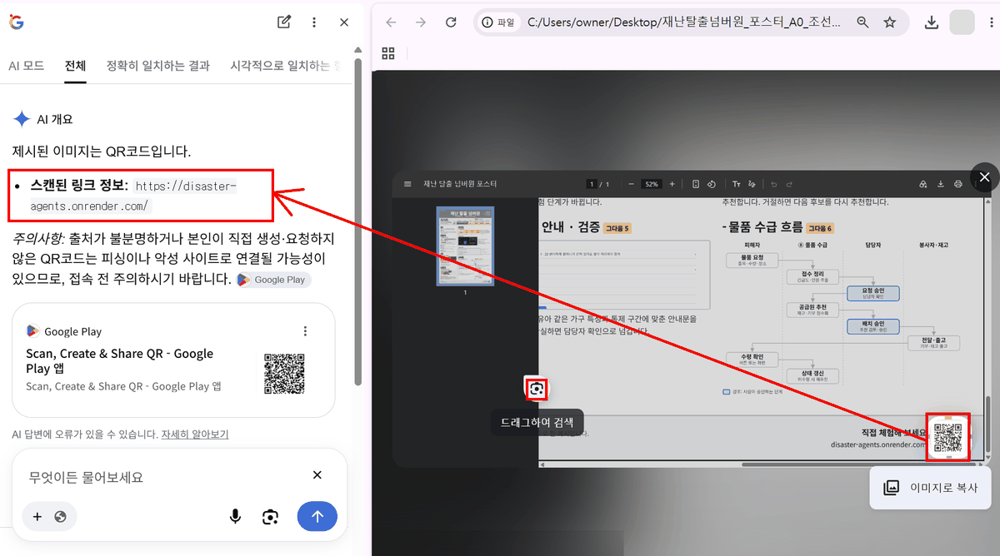

화면에 보이는 글자와 그림을 텍스트·번역·검색 결과로 바꾸고, PDF 속 QR 코드의 링크를 바로 엽니다. 설치가 필요 없는 크롬 기본 기능입니다.
도구 · Chrome 구글 렌즈핵심 · 화면 속 글자를 AI가 읽을 수 있는 텍스트로
언제 쓰나
문제
영상 속 슬라이드, 그림 파일, 스캔한 PDF의 글자는 «그림»이라 복사할 수 없고, Gemini Notebook도 읽지 못합니다.
해결
렌즈로 화면의 일부를 고르면 그 안의 글자를 인식(OCR, 광학 문자 인식)해 복사·번역할 수 있고, 같은 그림이나 원래 자료를 검색할 수 있습니다.
산출물
복사한 텍스트 · 번역문 · 잘라 낸 이미지 · 검색 결과와 AI 개요 · PDF 속 QR 코드의 링크
조건
학교 관리자가 크롬 정책으로 렌즈나 AI 모드를 꺼 둘 수 있습니다.
1 기본 동작
글자가 보이는 화면을 띄웁니다. 영상이면 그 장면에서 일시정지합니다.
페이지의 빈 곳에서 마우스 오른쪽 버튼 → Google 렌즈로 검색을 고릅니다.
영상 위에서 누르면 유튜브 메뉴가 먼저 나오므로, 오른쪽 버튼을 한 번 더 누르면 크롬 메뉴가 나옵니다.
화면이 어두워지면 필요한 부분을 마우스로 끌어 네모로 고릅니다.
고른 부분 위에 뜨는 메뉴(텍스트 복사 · 번역 · 이미지로 복사)를 쓰거나, 옆 창의 검색 결과를 봅니다.

유튜브 강연 영상을 멈추고 슬라이드 제목을 고른 화면. 고른 부분 아래에 텍스트 복사 · 번역 · 이미지로 복사 메뉴가 뜨고, 왼쪽 옆 창의 AI 개요가 영어 문구를 읽어 뜻을 풀어 줍니다. 아래 입력칸에 «중학생에게 설명해 줘»처럼 이어서 물을 수 있습니다.
메뉴 이름은 2026년 11월 크롬 화면 기준입니다. 크롬 업데이트로 바뀔 수 있으니 화면 문구를 따르세요. 글자를 찾지 못한 그림에서는 «이미지로 복사»만 나옵니다.
2 기능별 쓰임
기능
하는 일
이럴 때
텍스트 복사
고른 부분의 글자를 인식해 복사합니다.
슬라이드 문구를 Notebook 소스나 Gemini 프롬프트에 넣을 때
번역
고른 부분을 그 자리에서 번역해 보여 줍니다.
영어 원문 자료의 뜻을 빠르게 파악할 때
이미지로 복사
고른 부분을 그림으로 복사합니다.
수업 슬라이드에 장면 하나를 넣을 때 (출처 표기 필수)
옆 창 검색 결과
고른 부분과 관련된 웹 결과와 AI 개요를 보여 줍니다. 위쪽 탭으로 AI 모드 · 전체 · 정확히 일치하는 결과 · 시각적으로 일치하는 결과를 바꿔 봅니다.
그림의 원래 출처, 용어의 뜻, 원래 발표 자료를 찾을 때
이어서 묻기
옆 창 아래 입력칸에 질문을 이어서 씁니다.
«이 문구를 중학생에게 설명해 줘»
3 PDF·QR 코드 속 링크 바로 열기
가정통신문·연수 포스터·공문 붙임 PDF에는 설문지나 안내 페이지로 가는 QR 코드나 인쇄된 주소가 자주 들어 있습니다. 화면에 띄운 QR 코드를 찍으려고 휴대폰을 꺼낼 필요 없이, 렌즈로 고르면 그 자리에서 링크를 읽어 줍니다.
PDF 파일을 크롬으로 엽니다. 파일을 크롬 창으로 끌어다 놓거나, 파일을 오른쪽 클릭 → 연결 프로그램 → Google Chrome을 고릅니다.
문서의 빈 곳에서 오른쪽 버튼 → Google 렌즈로 검색을 고릅니다. 메뉴에 없으면 크롬 오른쪽 위 ⋮ 메뉴에서 Google 렌즈로 검색을 누릅니다.
화면이 어두워지고 «드래그하여 검색»이 보이면, QR 코드만 네모로 고릅니다.
왼쪽 옆 창의 AI 개요에 «스캔된 링크 정보»로 주소가 나옵니다. 주소를 읽어 확인한 뒤 누르거나, 복사해 주소창에 붙여 엽니다.
QR 코드 대신 인쇄된 주소(예: 포스터 아래 작은 글씨의 주소)가 있으면 그 줄을 고르고 텍스트 복사 → 주소창에 붙여 넣습니다. 스캔한 PDF처럼 주소를 눌러도 열리지 않을 때 쓰는 방법입니다.

크롬으로 연 포스터 PDF에서 오른쪽 아래 QR 코드를 고른 화면. 옆 창 AI 개요에 스캔된 링크 정보가 주소로 나옵니다. 포스터에 인쇄된 주소(disaster-agents.onrender.com)와 같은지 대조한 뒤 엽니다.
이럴 때
예
가정통신문·안내문 PDF
회신용 구글 설문지 QR을 열어 질문 내용과 마감 설정을 미리 확인
연수·행사 포스터
신청 페이지 QR을 열어 신청 기간·대상을 확인하고, 링크를 학년 메신저에 공유
교과서·학습지 PDF
디지털 자료(영상·활동지)로 가는 QR을 수업 전에 열어 링크가 살아 있는지 점검
공문 붙임 문서
눌러도 열리지 않는 인쇄된 주소를 텍스트로 복사해 주소창에 붙여 열기
열기 전에 주소를 읽습니다 — QR 코드는 주소가 숨겨져 있어 피싱(가짜 사이트로 꾀어 개인정보를 빼 가는 수법)에 자주 쓰입니다.
① 주소의 도메인(https:// 다음부터 첫 / 앞까지)이 문서를 낸 기관과 맞는지, ② 문서에 인쇄된 주소와 같은지 확인합니다.
출처가 불분명한 문서의 QR, 로그인·결제·개인정보를 요구하는 페이지는 열지 않습니다. AI 개요가 주소를 잘못 읽을 수도 있으니 글자 하나하나 대조합니다.
4 수업·업무 활용
상황
방법
강연 영상의 슬라이드 글자
장면 3~4개의 글자를 텍스트 복사로 모아, Gemini Notebook에 «[화면 글자] 장면 설명»과 함께 복사한 텍스트 소스로 넣습니다. Notebook은 자막만 읽으므로 이렇게 보충합니다. → 사례 5
영어 자료의 어휘 정리
렌즈 번역으로 뜻을 파악하고, 원문 텍스트를 복사해 Gemini에 «핵심 어휘 10개를 표로(단어 | 문맥 속 뜻 | 예문)»라고 요청합니다.
스캔 PDF · 사진 속 공문
복사가 안 되는 문서를 크롬으로 열고 렌즈로 문단을 골라 텍스트로 옮깁니다. 개인정보가 없는 문서만 씁니다.
그림 출처 확인
시각적으로 일치하는 결과 탭에서 같은 그림이 처음 실린 곳을 찾아, 수업 자료에 쓸 수 있는지(저작권·이용 조건) 확인합니다.
휴대폰에서
휴대폰의 Google 앱 검색창에 있는 렌즈(카메라) 아이콘으로 종이 학습지·게시물을 찍어 같은 일을 할 수 있습니다. 화면 문구는 기기마다 다릅니다.
프롬프트 · 렌즈로 가져온 화면 글자 쓰기 (Notebook에)
소스 중 "[화면 글자]"로 시작하는 것은 영상 속 슬라이드에서 가져온 글자입니다.
이 글자와 영상 자막을 함께 보고,
1) 슬라이드 문구의 뜻을 중학생 말로 한 문장씩
2) 발표자가 그 슬라이드를 보여 주며 한 말 요약
을 표로 정리해 주세요. 표(슬라이드 문구 | 쉬운 뜻 | 발표자가 한 말).
5 검증 포인트
① 인식 오류 — 숫자(0과 O, 1과 l), 특수문자, 줄바꿈이 틀리기 쉽습니다. 수치·고유명사는 원래 화면과 대조합니다. ② 번역은 뜻 파악용 — 수업 자료에 그대로 쓰지 않고 교사가 다듬습니다. 전문 용어는 교과서 용어로 바꿉니다. ③ AI 개요도 생성 결과 — 옆 창의 AI 개요는 Gemini 답과 마찬가지로 틀릴 수 있습니다(환각). 링크된 원문을 열어 확인합니다. ④ 출처와 저작권 — «이미지로 복사»한 장면은 영상 제목·채널·주소를 출처로 적고 수업 안에서만 씁니다. ⑤ 보내지는 정보 — 렌즈로 고른 화면은 구글 검색으로 보내집니다. 학생 이름·성적이 보이는 화면(나이스, 출석부, 채점표)에는 쓰지 않습니다. ⑥ QR 링크 — 렌즈가 읽은 주소는 열기 전에 도메인과 문서에 인쇄된 주소를 대조합니다(3절).
핵심 원리
렌즈는 «그림 속 글자»를 «AI가 다룰 수 있는 텍스트»로 바꾸는 입구입니다. 생성형 AI는 넣어 준 텍스트만큼만 정확하므로,
렌즈로 가져온 텍스트를 원래 화면과 한 번 대조한 뒤 프롬프트나 소스에 넣는 것이 품질을 좌우합니다.
문제 해결 — 오른쪽 버튼 메뉴에 «Google 렌즈로 검색»이 없으면 크롬을 최신으로 업데이트하고, 그래도 없으면 학교 관리자가 정책으로 끈 것입니다
(크롬 정책 SearchContentSharingSettings — 렌즈, AIModeSettings — AI 모드). 이때는 화면을 캡처해 Gemini 앱에 첨부하고 «그림 속 글자를 그대로 옮겨 줘»라고 요청하는 방법이 있습니다.